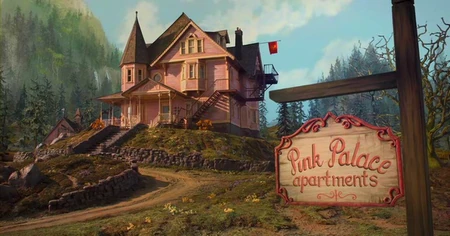
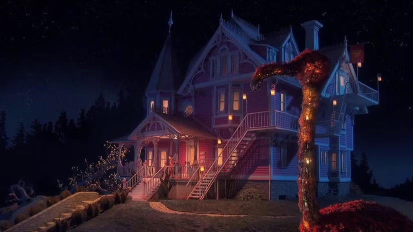

Visual World
Between shadow and wonder.

#636E4A#B1865E#91B7BE#4B3F31
Muted greens, dusty pink and earthy browns make the house feel weathered and familiar. Soft daylight reveals the landscape and the winding path.

#0A0D1C#2E406E#64415F#E09F5B
Deep blues and violet shadows surround the house. Warm windows stand out in the darkness, making the building feel inviting and theatrical.
The same house, a different feeling
The familiar shape of the Pink Palace connects these images, while lighting and color change its mood. The daylight scene feels grounded; the night scene draws attention to small pools of warm light.
A visual reading of these two selected stills. They show different times of day as well as different worlds, so the contrast is not caused by world alone. Swatches are representative colors sampled from the supplied images, not an official film palette.